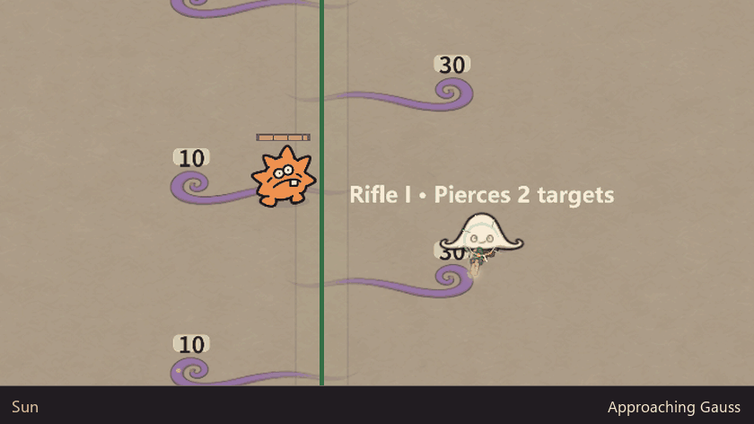
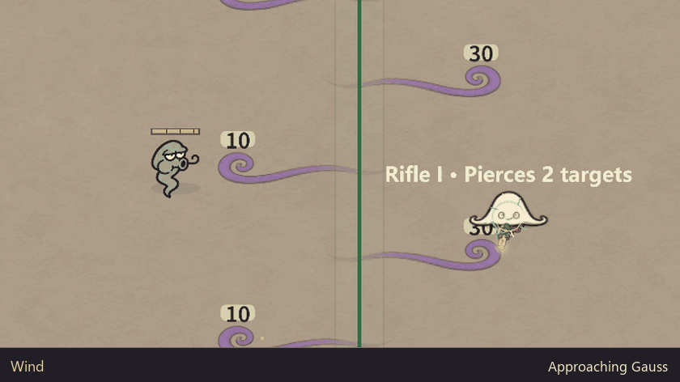
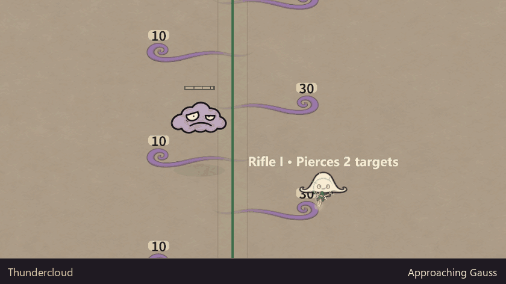
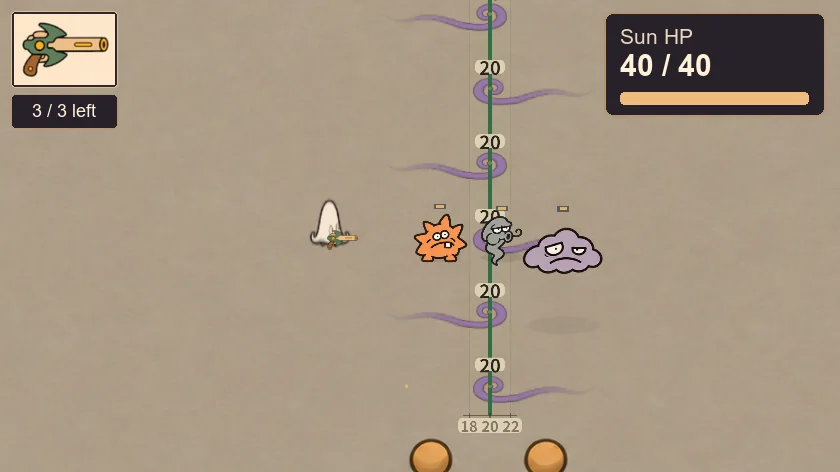
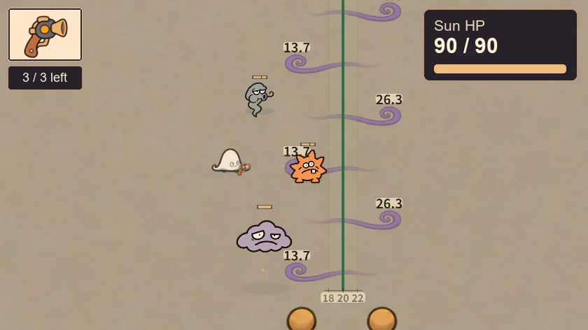
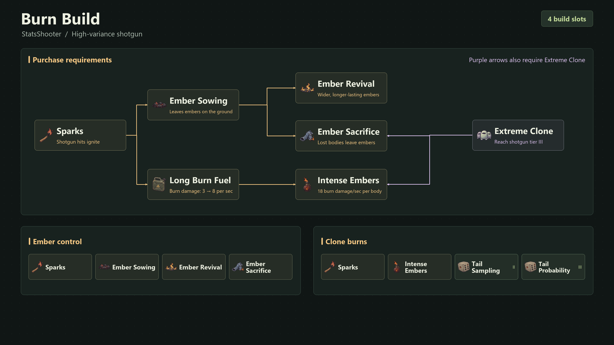

StatsShooter.
The mean controls damage. Variance shapes your weapon.
In this 2D top-down roguelike shooter, every shot that hits updates one of six data values. Dodge weather enemies, calibrate the mean, and use cards to change how you sample and build your weapon.
Explore the combat rulesCore Mechanics
Combat Rules
Hits update your data, and the mean determines whether shots deal direct damage. Decide when to keep firing and when to calibrate.
Combat and Resupply
Defeat enemies to earn coins. When the countdown ends, spend them on upgrades in the shop.
Six Observations
A shot that hits replaces one value. A miss leaves all six values as they are.
Move and Shoot
Move with WASD, aim with the mouse, and hold left click to shoot.
Keep the Mean at 18–22
Average the six values to get the mean. Shots deal direct damage only within this range.
Variance Sets the Weapon Tier
Variance measures how spread out the values are. Low variance adds rifle piercing. High variance widens shotgun coverage.
Right-click to Calibrate
Right-click to adjust one value and bring the mean as close to 20 as possible.
Try Calibrating
Replacing a 20 with a 40 raises the mean by about 3.3. Step through the example to see what happens to your damage.
Mean 20.0
The mean is in range. Shots deal direct damage.
Between Waves
Upgrade Shop
Defeat enemies to earn coins. When the countdown ends, spend them on cards and supplies or reroll the shop.
Statistical Cards
Four Slots. Which Card Goes?
Your rifle is at Tier III and all four slots are full. To equip Piercing Echo, would you give up steadier samples or the extra coins from piercing?
Current Loadout 4 / 4
- Precision Sampling
- Eight-measurement Average
- Center Compression
- Piercing Bounty
Expected variance is a long-run estimate. After swapping, each hit replaces one of the existing values.
Rifle Tier III
Pierces up to 3 enemies at full damage
- 19.375
- 20.625
- 19.75
- 20.25
- 19.875
- 20.125
Current mean 20.00
Current variance 0.156
Expected variance 0.156
The mean must be 18–22. Tier III unlocks at variance ≤ 0.30 and drops above 0.45.
Choose a card to replace. Both options start with the same six values.
Both demos use a fixed sequence of draws. Each hit updates one slot.
Character & Enemies
Gauss and the Weather Enemies
Gauss changes shape as the distribution changes. Weather enemies disrupt movement, sampling, and calibration.
Gauss Gets Wider as Variance Rises

Each hit updates one of six observations. As variance rises, Gauss gets wider and shorter while keeping the same hitbox.
Weather Enemies

Sun
Chases you down, making it harder to survive when the mean drifts out of range and your shots lose direct damage.

Wind
Pushes one observation away from the mean. It can knock the mean out of range or raise variance enough to upgrade your shotgun.

Thundercloud
Briefly disables calibration, forcing you to plan when to repair your data.

Storm Boss
Rewrites an observation. Bring the mean back in range while keeping the variance your build needs.
Low- and High-Variance Builds
With the mean at 18–22, the variance of the six live values sets the weapon tier. Closely grouped observations improve rifle piercing. A wider spread extends shotgun coverage.

Lower Variance Adds Piercing
The rifle upgrades as variance falls to 60, 12, and 0.30. Tier I pierces up to two enemies, Tier II up to three, and Tier III deals full damage to all three.
Keep Observations Near 20
Precision Sampling narrows the draw range. Eight-measurement Average turns eight draws into one observation. Center Compression halves its distance from 20. Concentrated Calibration can restore the mean and lower live variance during combat.
Stability, Fire Rate, and Card Slots
With the rest of the loadout fixed, switching to 64-measurement Average reduces the theoretical variance of new observations from 0.188 to 0.023 and slows the fire rate by about 26%. Equipping just 64-measurement Average and Center Compression leaves room for Piercing Bounty and Piercing Echo.

From a Spread to a Full Ring
The base shotgun fires a five-pellet spread. At variance 140, 240, and 360, it upgrades to seven, nine, and 25 pellets. At Tier III, it fires in every direction.
Sample Near Both Extremes
Tail Sampling draws values near 0 or 40. Tail Probability makes the endpoints more likely. Variance-preserving Calibration can restore an out-of-range mean or increase variance while the mean is in range.
Coverage and Focused Hits
Centroid Burst requires hitting at least three enemies in one shot. Focus Strike requires landing at least 60% of the pellets on one target. Wide Scatter raises the Tier III pellet count from 25 to 37, so Focus Strike takes 23 hits instead of 15.
With Tail Sampling II and Tail Probability III equipped, swapping Extreme Selection for Wide Scatter reduces the theoretical variance of new observations from 399.2 to 384.7 and adds 12 pellets at Tier III.
Calibration Spawns Clones
Reaching Tier III during a run unlocks Extreme Clone in the shop. When the mean returns to the safe range with variance still at least 350, Gauss and each existing clone spawn one clone, up to the clone limit.
Endgame Design

Ignition BuildFull sizeSame Mean, Two Playstyles
See the buildsThe Ignition Build in the Endgame
Gauss and the Extreme Clones fire high-variance shotguns together. Burns stack on the same enemy, while embers on the ground ignite anyone who crosses them.
How the Build Plays
Use the shotgun ring to ignite a crowd, then let ground embers spread the fire. When multiple clones hit the same target, each applies a separate burn.
Four Cards in the Endgame Demo
Sparks, Ember Sowing, Ember Revival, and Intense Embers each use one slot. Extreme Clone upgrades separately and spawns more clones when the mean returns to range with enough variance.
Four Stages of the Ignition Build
Scroll down or select a stage.
-
Sparks
Shotgun hits ignite enemies. Burns already applied keep dealing damage when the mean goes out of range.
-
Ember Sowing
Spent pellets and moving enemies on fire leave embers. Other enemies ignite when they cross the embers.
-
Ember Revival
Each ember patch grows from a radius of 0.8 to 1.2 and lasts 4 seconds, up from 2.2.
-
Extreme Clone
Gauss and each clone can apply a separate burn to the same target, stacking damage.
Calibration, Card Slots, and Player Choice
The Game Picks the Slot. You Pick the Moment.
In the first playtest, players were too busy dodging and firing to compare calibration options under pressure. After I automated slot selection, some players still right-clicked repeatedly. I added a preview of the next shot’s mean and damage. Automated tests confirm that it matches the outcome. A follow-up playtest will check whether it helps players time calibration.
Data and Combat Cards Share Four Slots
To equip Piercing Echo, replacing Eight-measurement Average raises the expected variance across six values from 0.156 to 1.25. Replacing Piercing Bounty keeps the variance forecast steady and gives up the coin reward for piercing.
Design Reflection
Working backward from the endgame helped define how a finished build should feel. It also made progression too predictable. Once players chose the low- or high-variance route, they mostly collected a fixed set of cards. The low-variance route came together sooner and offered fewer chances to change tactics. The statistical concepts need to matter when players pick cards, replace them, and decide when to calibrate.